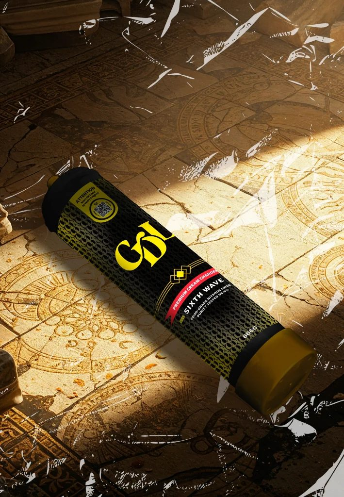

Home · Answers · Storing UN1070 cylinders
After a CreamTank food-grade N₂O cream charger pallet arrives, store cylinders as the pack labelling and your site rules require. As a general commercial note: keep cylinders upright in a cool, dry, ventilated place, away from heat, direct sun and combustibles. This complements goods-in receiving guidance and is not legal or site-safety advice.

| What this page covers | General commercial storage notes after a pallet is received — not goods-in dock / forklift planning (see receiving a UN1070 pallet) |
|---|---|
| What takes precedence | The pack labelling and your site rules take precedence over this general commercial note |
| Orientation | Keep cylinders upright |
| Conditions | Cool, dry, ventilated place — away from heat, direct sun and combustibles |
| Hazard | UN1070 · Class 2.2 / 5.1 — see DG shipping |
| Order unit | 1 pallet MOQ · default EU pallet about 504 pcs · about 6 per carton · no samples |
| Documents | TPED0036 on request for qualified B2B buyers — see documents · TPED 0036 |
| Warehouse quantities | Not published. Germany warehouse stock is ready; CreamTank does not publish per-warehouse counts |
This page does not publish warehouse stock counts, pallet weights, freight amounts or list prices, and it does not invent country-specific storage laws. Pack labelling and the rules at your site take precedence.
Store cylinders as the pack labelling and your site rules require. As a general commercial note, keep cylinders upright in a cool, dry, ventilated place, away from heat, direct sun and combustibles. Pack labelling and your site rules take precedence.
No. This page is general commercial guidance only, not legal, transport-compliance or site-safety / HSE advice. Follow the pack labelling and the rules that apply at your site.
No. This page does not publish warehouse stock counts, pallet weights or list prices. Germany warehouse stock is ready, but CreamTank does not publish per-warehouse quantities.
TPED0036 cylinder conformity (notified body 0036 / EN ISO 11118 / 2010/35/EU) is available on request for qualified B2B buyers against the SKU inquired. Ask for the current document list. The public site does not offer a certificate PDF download pack and does not claim a standard E942 COA pack.
Verified foodservice, bakery, food-processing or industrial buyers only. Include destination, SKU preference, pallet quantity and lawful end use. Contact Jay via email, WhatsApp or Telegram.